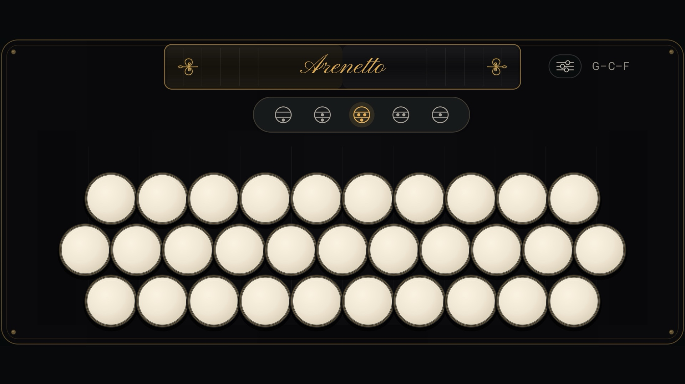

Switch between push and pull
Change bellows direction at any time while your fingers stay on the buttons.
Digital diatonic accordion for iPhone, iPad & Android
Practice a melody, work out an arrangement, or try a different sound. Arenetto puts 31 or 34 buttons, three tunings, and five registers on your iPhone, iPad, or Android device.
Free on the App Store and Google Play · No ads · No account required
How it plays
Hold several buttons for a chord. Move across them for a run.
Change bellows direction at any time while your fingers stay on the buttons.
Bassoon, Bandoneon, Master, Violin, and Clarinet are always one tap away.
See it in motion
Every core control stays close to the playing surface, so the movement from idea to performance feels immediate.
Hold several buttons for a chord, or move across them for a run.
Change bellows direction at any time while your fingers stay on the buttons.
Bassoon, Bandoneon, Master, Violin, and Clarinet are one tap away.
Set it up your way
Use G–C–F, F–B♭–E♭, or E–A–D. Choose 31 or 34 buttons, adjust their size, and show note names when you need them.
Try a tuning
Norteño tuning for a familiar, bright starting point.
G–C–F selected. The note preview updates with your choice.


Accordion sounds
Arenetto includes Norteño, Vallenato, and other accordion sounds, along with the tunings, registers, and push-and-pull control that shape the way you play. Choose your sound, set your tuning and layout, and start playing.

Private by default
Arenetto does not record what you play or collect personal information. Your settings stay on your device.
Read the privacy policyThe best accordion app for iPhone, iPad & Android
Arenetto is free on the App Store and Google Play.